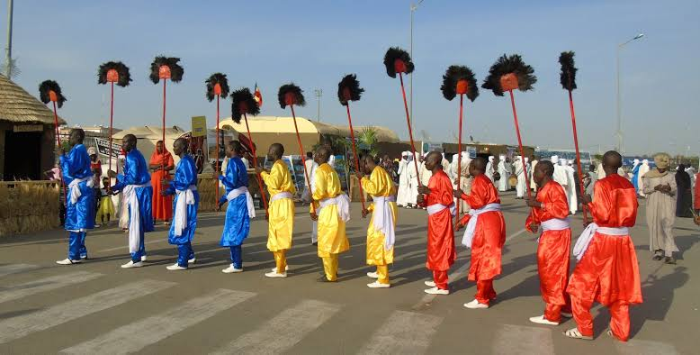
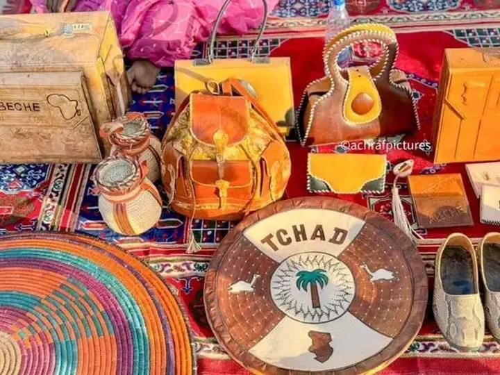
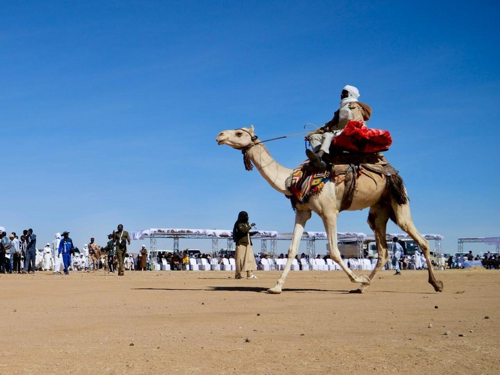
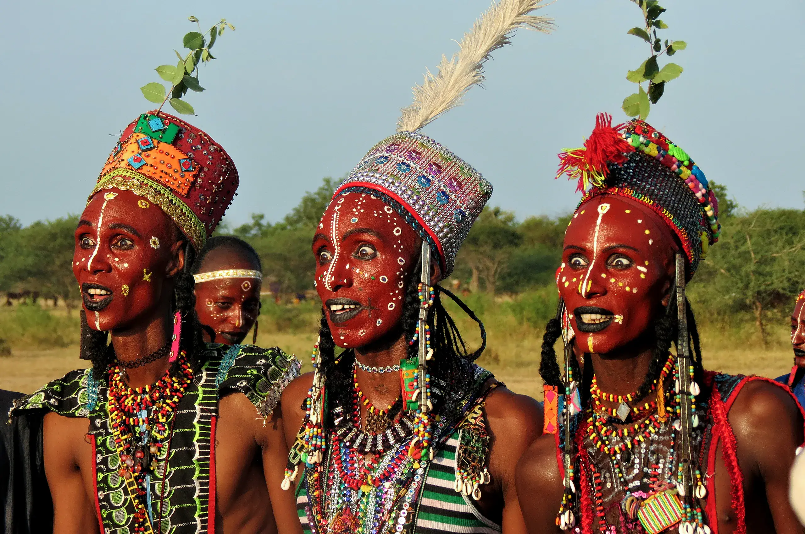
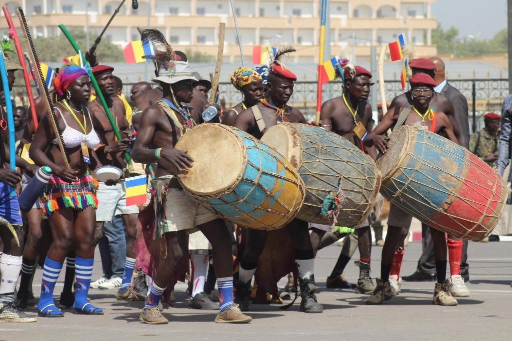
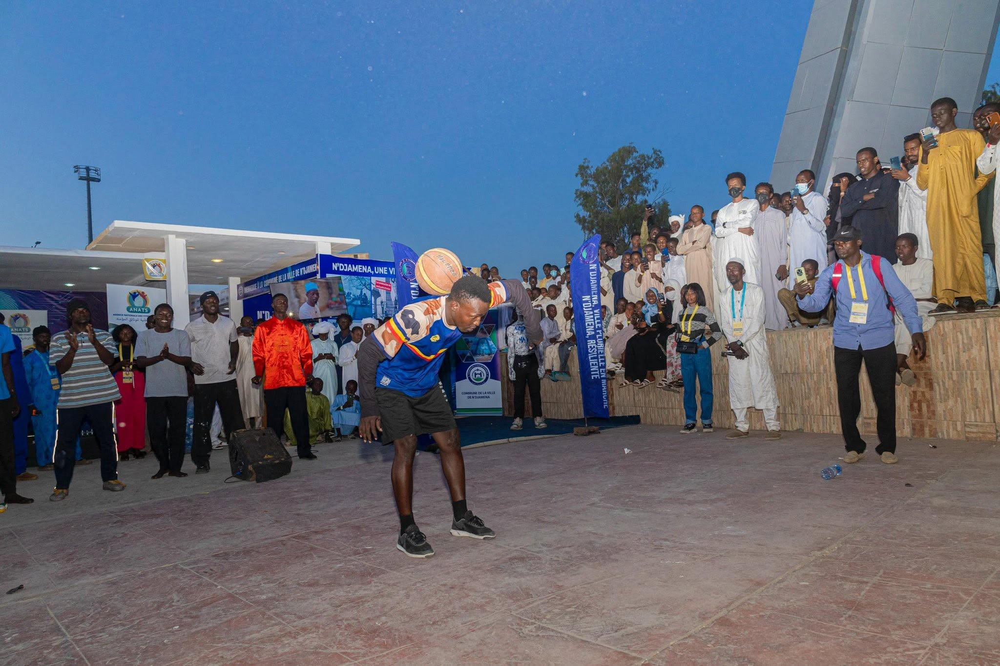

Unité & Diversité
La vitrine des traditions chadiennes
Organisé chaque année en fin d'année à N'Djamena, le Festival Dary transforme la capitale en un gigantesque village culturel. Chaque province y érige ses habitats traditionnels, exposant ses savoir-faire ancestraux, sa gastronomie locale et ses créations artisanales.
C'est un espace unique d'échange, de cohésion sociale et de transmission culturelle où se produisent troupes de danses folkloriques, musiciens et artistes venus de tout le territoire.
23
Provinces réunies
Déc–Jan
Période festive
N'Djamena
Lieu de célébration
Au cœur du festival
-
Villages provinciaux : Reconstitution fidèle des habitats traditionnels du Nord au Sud.
-
Prestations scéniques : Concerts, danses traditionnelles et compétitions artistiques.
-
Gastronomie régionale : Dégustation des plats typiques de chaque région du Tchad.
Événement placé sous le haut patronage du Ministère de la Culture.
Galerie Photo
Instantanés du Festival

Danses & Rythmes des régions

Exposition d'artisanat d'art

Course des chameaux

Parures et costumes régionaux

Musique & Instruments d'époque

Rencontres et convivialité
Vidéos & Reportages